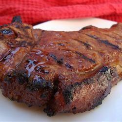

Great Japanese teriyaki-style marinated ribeye steak
with a from-scratch teriyaki sauce.
- 2 tablespoons soy sauce
- 2 tablespoons water
- 1 tablespoon white sugar
- 1 1/2 teaspoons honey
- 1 1/2 teaspoons Worcestershire suace
- 1 1/4 teaspoons distilled white vinegar
- 1 teaspoon olive oil
- 1/4 teaspoon onion powder
- 1/4 teaspoon garlic powder
- 1/8 teaspoon ground ginger
- 2 (6 ounce) lean beef rib eye steaks
-
Whisk together the soy sauce, water, sugar, honey,
Worcestershire sauce, vinegar, olive oil, onion powder,
garlic powder, and ground ginger in a large bowl.
Pierce steaks several times with a fork. Marinate steaks
in soy sauce mixture for at least 2 hours.
-
Cook the steaks in a hot skillet, wok, or hibachi over medium
heat; 7 minutes per side for medium. An instant-read thermometer
inserted into the center should read 140 degrees F (60 degrees C).